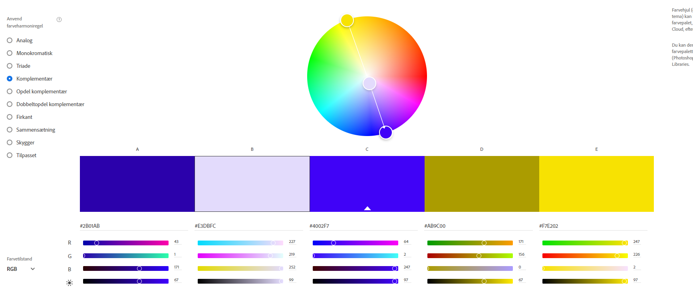

Webteknologier
Frederik Lykke-Rasmussen
Det første forløb vi har haft om i Informatik har været webteknologier, og derfor har vi skullet stable en simpel hjemmeside på benene, som skulle indeholde elementer såsom links, undersider, beskrivelse af kode mm. Nedestående er hvad jeg fik brugt tiden på.
Links jeg bruger, når jeg er faret vild.
Link til
lectio
Link til
github opgaver og beskrivelse
Beskrivelse af kode:
Her er forhåbentligt en boks. Hura for det, det var der faktisk, her kommer en tilfældig tekst, fordi jeg lige vil teste om alt teksten forbliver inde i boksen. Da jeg stod op i dag var jeg meget træt, er jeg stadig, men det er der desværre ikke meget at gøre ved. Nå, teksten blev i boksen, dejligt.
For at få lavet denne boks har jeg under mit ccs dokument konstrueret en boks rundt om teksten på denne side. boksen er blevet defineret som "div", og derefer har jeg valgt bredde, at rammen skulle være dottet mm. her er boksens koder som er lavet i et ccs dokument:
div{
width:500px;
border:6px dotted black;
padding:10px;
margin:auto;
}
"width" styrer bredden af boksen.
"border" består af tre dele, "6px" er tykkelsen på rammen, 6 pixels, "dotted" gør rammen til prikker/dots. Til sidst har jeg valgt at gøre rammen sort.
"padding" styrer mellemrum mellem tekst og ramme.
"margin" styrer boksens placering, i dette tilfælde centrerer "auto" den.
Nedenstående er en den simpleste kode til en hjemmeside, hvor der vil stå "hello world".
<!DOCTYPE html>
<html>
<head>
<meta charset="UTF-8">
</head>
<body>
Hello world.
</body>
</html>
For os danskere er fjerde linje, "meta charset="UTF-8", vigtig, uden den ville vi ikke kunne bruge tegn såsom "æøå".
Adobe Color:
Her under første forløb i informatik blev vi introduceret til dette farvehjul, som kan hjælpe med sammensætte farver som komplimenterer hinanden. Selvom mit farvevalg nu sådan set bare var valgt ud fra, hvad jeg lige følte for, kan vi se, at den blå baggrund matcher den lavendel-farvede boks.

Så ja, ifølge hjulet ville det se helt vildt lækkert ud med noget gul skrift. Jeg må dog indrømme, at jeg ikke lige helt føler, at det ser optimalt ud.
Links til andre forside og andre underside: